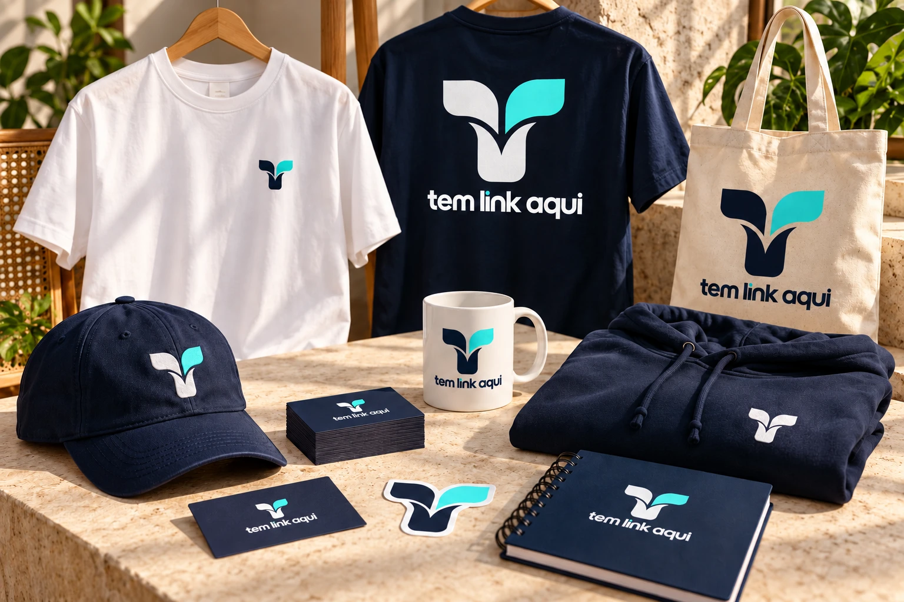
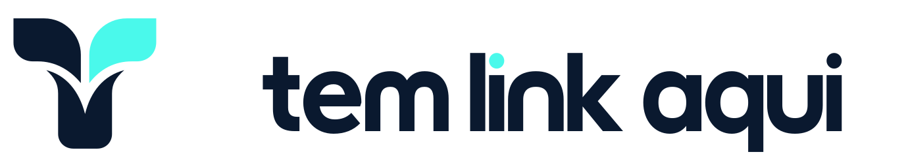
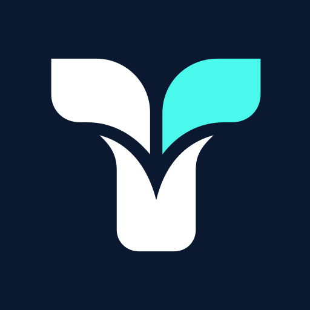
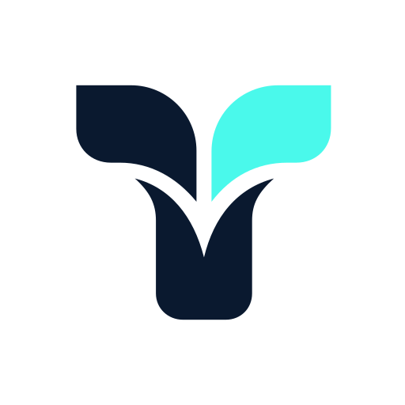
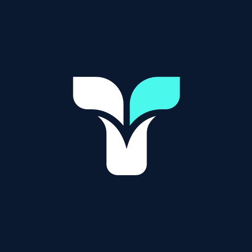
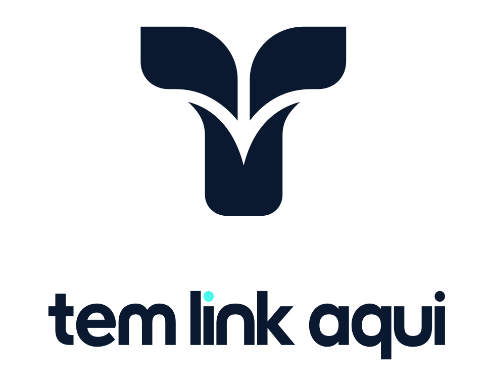
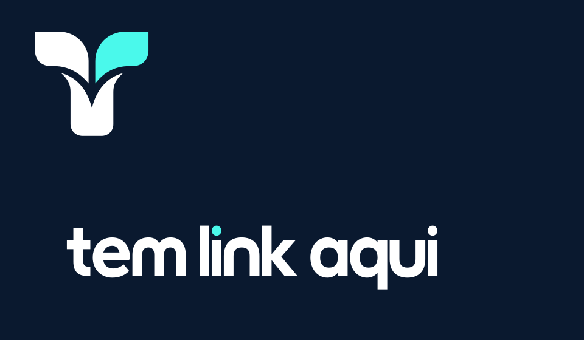

A marca escolhida · 23/10/2026

Simulação por IA. SVGs são a fonte de verdade.

Dois ramos convergem no mesmo ponto. O nome da marca continua Tem Link Aqui; Confluência identifica a direção visual escolhida.
Lettering geométrico próprio, em contornos. Outfit é usada nas apresentações, sob SIL OFL. Tom direto, próximo e curioso. Convidar à descoberta, sem promessa de alcance ou resultado.

Logos horizontais e verticais, assinatura e símbolo. Fundo transparente ou aplicado em branco, navy e turquesa. Não usar navy sobre navy nem branco sobre branco. Turquesa funciona como acento; em marca pequena sobre fundo claro, preferir navy monocromático.



Favicon SVG adapta a tinta à preferência de cor do navegador. ICO possui 16/32/48/64/256 px; PNG inclui 24 e 128 px. Apple Touch 180, app 192/512/1024 e maskable 512.
Post 1080×1080, story 1080×1920, capa 1200×630, LinkedIn 1584×396 e YouTube 2560×1440, em claro e escuro. Conferir o recorte real de cada plataforma. O manifest do kit não instala uma PWA por si só.


Peito: canvas 35 mm. Costas: largura 280 mm. Ecobag: 240×240 mm. Caneca: 200×85 mm. Adesivo: 60 mm. Cartão: 90×50 mm, sangria ilustrativa de 3 mm. As medidas são estudos, sujeitos ao gabarito do fornecedor.
SVGs em RGB; PNGs de impressão em 300 ppi. Digitalização de bordado, faca, separação de tinta, CMYK e Pantone dependem de processo e prova. Nenhuma peça foi fabricada.
Reservar ao menos 1/8 do canvas do símbolo em volta da marca. Símbolo a partir de 24 px para uso geral; favicon 16 px como exceção, conferido na renderização. Assinatura horizontal a partir de 160 px. Em rodapés pequenos, usar wordmark sem símbolo, a partir de 90 px.
Não esticar, girar, acrescentar efeitos ou alterar a relação símbolo/nome. Preservar o canal central e as pontas. Conferir aplicação pequena e prova têxtil. A marca não substitui ícones de ação, rede ou categoria.
O pacote separa logos, fundos, web, social, print, sistema e aplicações. Inventário com hashes SHA-256 acompanha os arquivos. Sem pesquisa jurídica, teste com público ou certificação de acessibilidade total.